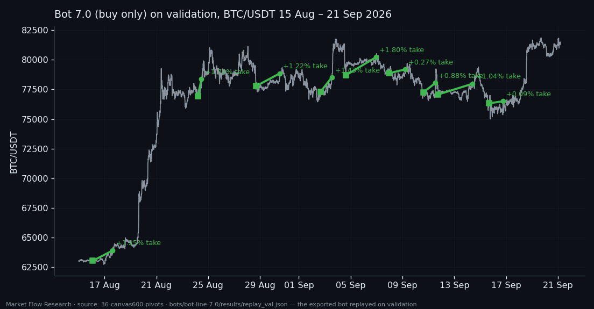
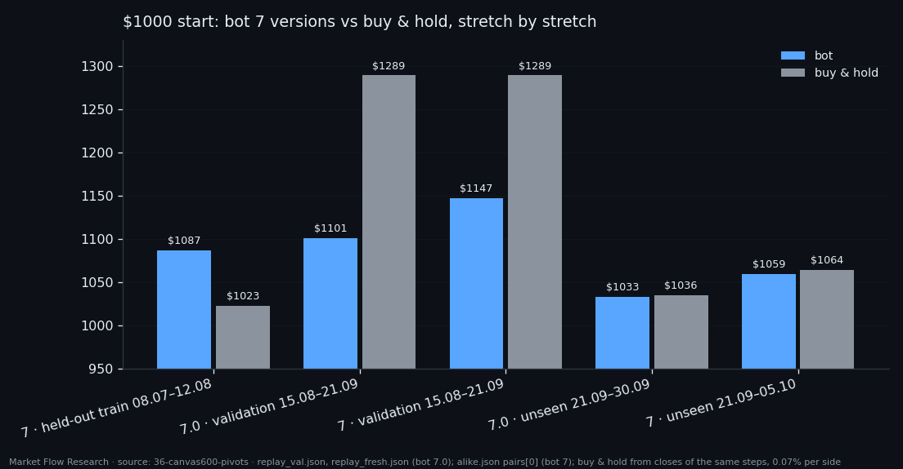
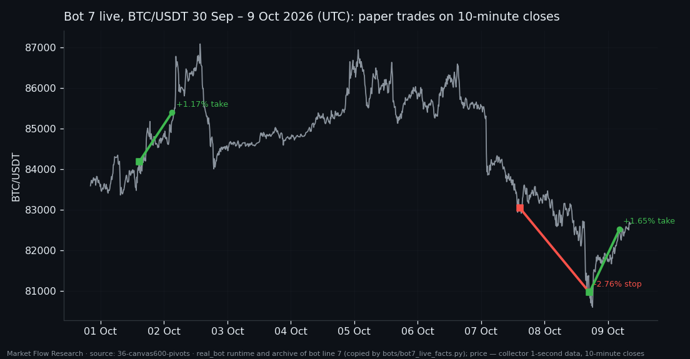

Bot 7 — From an Order-Book Canvas to Live Trading: Every Stretch, Every Result, Every Real Trade
Bot 7 is the end of a long research line: a transformer reads 30 hours of BTC order book as one canvas and says how likely it is that this moment sits in a 2.3% bottom — or, in its second version, a 2.3% top. This article puts the whole path in one place: how the networks were trained, what each version made on training-period weeks it was not fitted on, on validation, on days nobody had looked at, and since it went live. All live trades so far are listed at the end, model and exchange side by side. As of 9 October 2026 08:20 UTC the record is three closed trades: two take-profits and one stop.
① How bot 7 was trained
Input. Every 10 minutes the bot takes the last 160 hours of second-by-second Binance order-book data (resting liquidity on both sides, liquidity added and pulled, buy and sell flow), folds it into 1,100 records of 100 seconds and 8 features each, and gives the canvas to a small transformer. The output is one number: the probability that now is inside a 2.3% zigzag pivot zone. The zone is the honest label: a stretch of time around a bottom (or top) whose legs last at least 7 hours, within 10% of the leg's move from the extreme.
Training. BTC only. Networks learn on 21 Feb – 30 Jun 2026 (15,878 steps), a 200-hour gap follows, and 8 Jul – 12 Aug (4,445 steps) is held out to choose the epoch. Eighteen runs per side differ only in the loss function. 15 Aug – 21 Sep (5,265 steps) is validation: here the signal is turned into trades — the probability is summed over a window W, the bot acts when the sum reaches θ — and here W, θ and the networks were chosen.
Two versions. Bot 7.0 buys only: `BUY_pos` epoch 9, W 180 minutes, θ 11.74, take-profit 1.9% above the lowest price after entry, stop 2%, a filter for repeat signals and rule 7.1. Bot 7 trades both sides on one account: `BUY_l3` epoch 3 (W 340 min, θ 2.72) and `SELL_l2` epoch 17 (W 30 min, θ 1.74), one trade per 2.3% leg, take-profit 1.9%, stop 2.5%, a signal from the other side closes the trade. The pair was chosen not for money but for behaving the same on three stretches.

② Results on every stretch — against buy & hold
All historical runs start from $1000, put the whole account into each trade, use no leverage and pay 0.05% fee plus 0.02% slippage per side.
Held-out training weeks, 8 Jul – 12 Aug (bot 7): $1086.70 against $1022.67 for buying and holding — the only stretch where the bot clearly wins, in a month BTC rose 2.4%. Validation, 15 Aug – 21 Sep: bot 7.0 $1100.85 with nine trades, all take-profit; bot 7 $1147.38; buy & hold $1289.36. BTC rose about 29% and a bot that is out of the market much of the time cannot keep up. Every parameter was chosen here, so these are the most flattering numbers. Unseen days: bot 7.0 on 21–30 Sep $1032.92 (three trades, three take-profits) against $1035.51; bot 7 on 21 Sep – 5 Oct $1059.30 against $1064.02.
The pattern is consistent and not exciting: positive everywhere, roughly level with the market when the market is calm, far behind it in a strong rally. Earlier articles of this series give each stretch in full.

③ Live since 30 September — every trade so far
The bot runs on the data collector's live feed, a decision every 10 minutes. The model's trades are booked on paper from $10,000 at the close of the decision step, with exchange-level costs (0.10% fee + 0.02–0.03% slippage per side). In parallel each trade is sent to a real CEX.IO margin account: a $100 position at ×4 leverage. Bot 7.0 ran from 30 Sep 20:00 to 5 Oct 21:50 UTC; bot 7 replaced it at 5 Oct 22:00 UTC.
All trades as of 9 Oct 2026 08:20 UTC (model, paper):
- 7.0 · long · in 1 Oct 14:40 at 84,189.26 → out 2 Oct 03:01 at 85,398.81 · take-profit · +1.17%
- 7 · long · in 7 Oct 14:40 at 83,042.99 → out 8 Oct 17:00 at 80,962.59 · stop · −2.76%
- 7 · long · in 8 Oct 17:00 at 80,962.59 → out 9 Oct 04:20 at 82,515.32 · take-profit · +1.65%
Paper account: bot 7.0 $10,000 → $10,117.31 while BTC rose 2.81% over its days; bot 7 $10,000 → $9,884.89 while BTC fell 3.84% over its days.
Real exchange positions ($100, ×4):
- #129035 · long · in 83,067.00 → out 80,893.60 (stop) · −2.84 USDT after 0.23 USDT fees and rollover — the model expected −2.76%, the exchange gave −2.84%
- #129249 · long · opened 8 Oct 17:00 UTC at 80,900.1 · still open — the account owner moved its take-profit by hand to 85,000 (stop 78,938.2), so the model's take-profit at 82,500.88 was booked on paper but not on the exchange
- Bot 7.0's single trade never reached the exchange: the order failed on a missing component of the order client, and it was fixed afterwards
Three trades are not a track record, and this list is not a claim of an edge. It is published so the result can be checked against what the research promised: so far a take-profit is about 1.2–1.7% after costs and a stop about −2.8%, so the bot needs roughly two wins per loss just to stand still. The list will be updated as trades close. Research, not financial advice.

Reproduce this study
- Research log (.md, Ukrainian): goal, data, plan, scripts, every confirmed stage and table — enough to rerun the study
- Reproduction kit (.zip): the study's scripts, project rules and base scripts that build every class
- bot-line-7.0.md (.md, Ukrainian): the exported bot built from this study — model, signal, trade rules, how to rebuild it from raw data
If this changed how you read the tape, the natural next step is Volume Is the Fuel — Not the Steering Wheel — We recorded the Binance order book every second for six coins over five months and ran eighteen tests on what volume really does.
Volume Is the Fuel — Not the Steering Wheel
We recorded the Binance order book every second for six coins over five months and ran eighteen tests on what volume really does.
About Market Research Lab — What We Collect and Why
Most market commentary is storytelling.
From Calm to Calm: a Standard for What Counts as a Signal (BTC)
We stopped defining market signals with a stopwatch.
The Wall That Goes Quiet: What Resting Liquidity Predicts
We measured resting limit liquidity sitting on both sides of the book second by second across six coins, and asked the only question that matters:….
Comments
Discussion is powered by GitHub. Enable it by adding secrets/giscus.json (repo IDs from giscus.app).